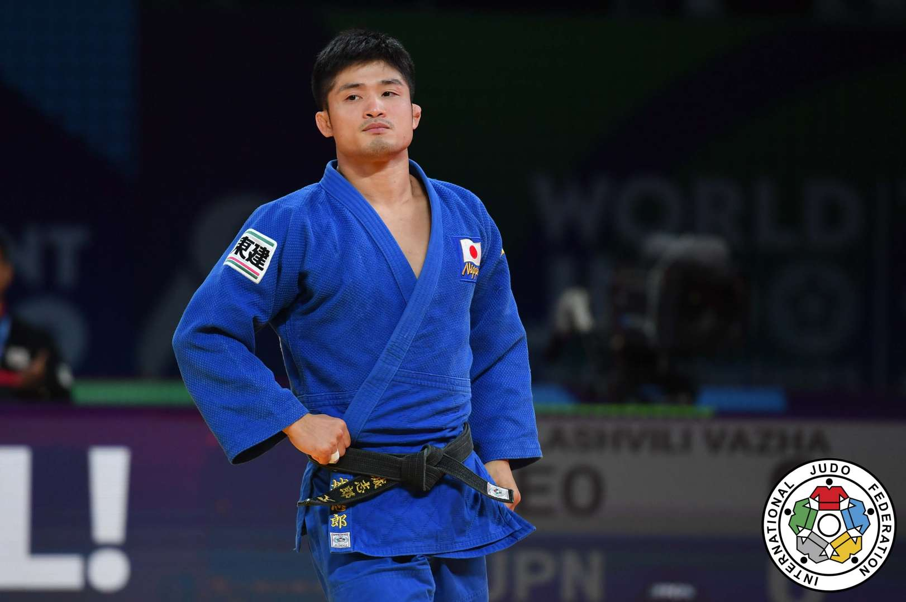
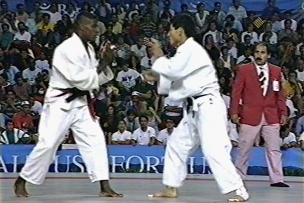
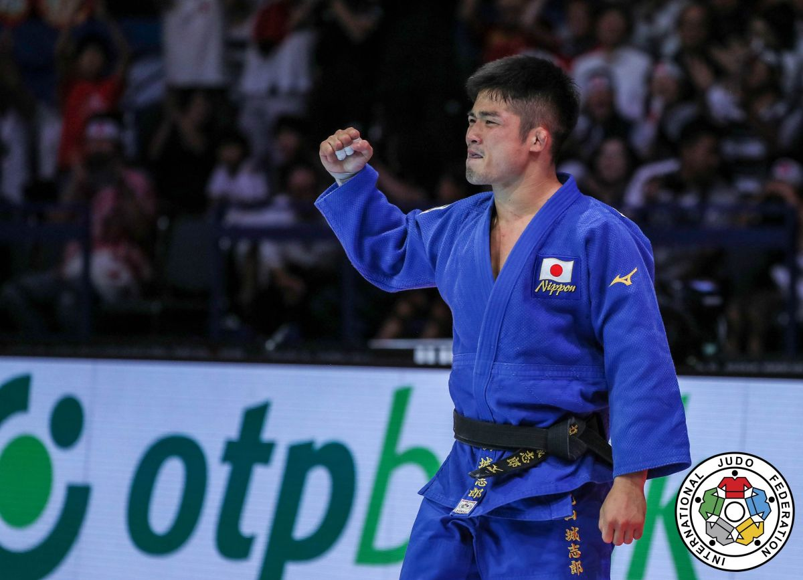
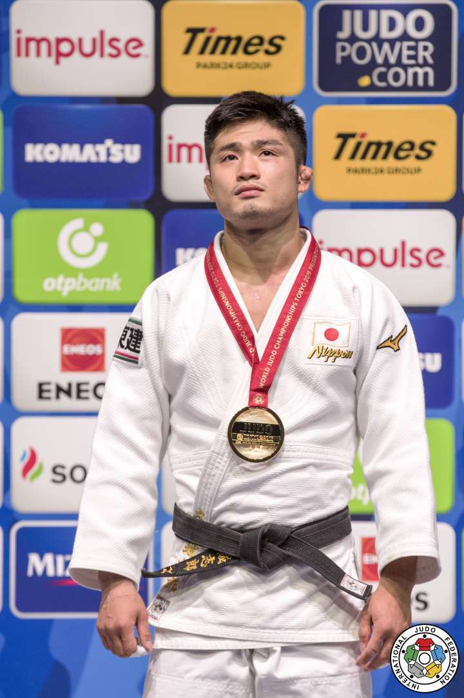

Joshiro jest to japoński judoka.Zdobył on złoty medal na mistrzostwach świata w 2019 wygrywając przy tym z Kim Limhwana .Urodził się on 1993 11 sierpnia.
Uchi mata jest jednym z oryginalnych 40 rzutów Judo opracowanych przez Kanō Jigorō. W tym rzucie wytrącamy przeciwnika z równowagi poprzez szarpnięcie nim w przód i skos , następnie wykonujemy obrót i zamach nogą między udami partnera. Joshiro jest nazywany królem uchi maty dlategoże wykonuję ten rzut perfekcyjnie i wiele razy wygrał nim walkę w świetnym wykonaniu!
Złoty medalista mistrzostw świata ma żone Kurumi Maruyama. Ma ona profil na instagramie oraz youtubie. Jego ojciec to Kenji Maruyama czyli również sławny judoka , który między innymi na olimpiadzie w Barcelonie w 1992 zajął siódme miejsce.
Był on złotym medalistą w mistrzostwach świata w 2019,otrzymał on srebrny medal w 2022 w Tashkent oraz w 2023 w Doha.Maruyama zdobył złoto w Wielkim Szlemie w Osace w 2018 roku przeciwko Abe i odniósł zwycięstwo w Wielkim Szlemie w Tokio w 2022 roku. Maruyama wygrał World Masters w 2018 roku w Kantonie i złoto w Wielkim Szlemie w Düsseldorfie w 2019 roku. Złoto drużyny World Mixed w Tokio w 2019 roku.
 